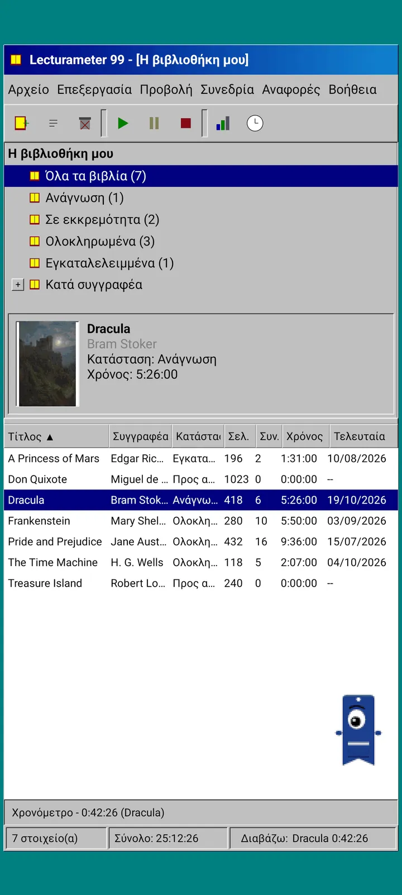
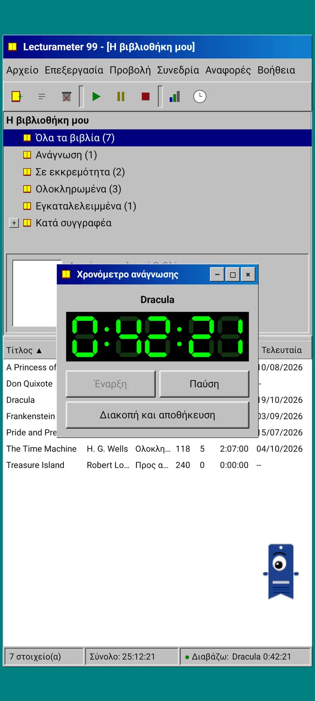
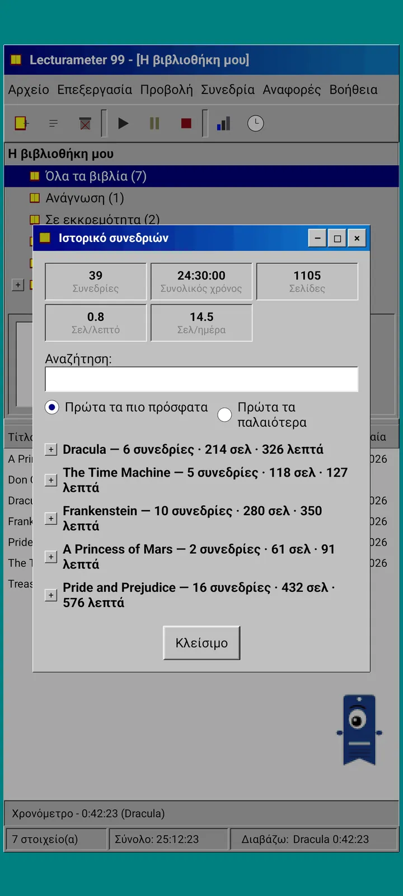
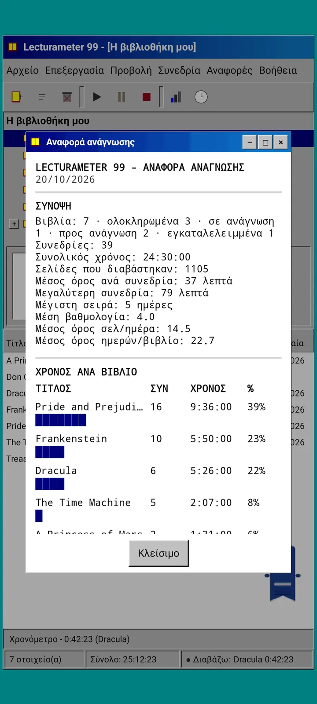

Ιστολόγιο · 2026-09-24
Lecturameter 1999: πώς θα έμοιαζε το Lecturameter ως παλιό πρόγραμμα υπολογιστή;
Ένας εναλλακτικός πελάτης του Lecturameter με παράθυρα, μενού, πίνακες και χρονόμετρο LCD, που ανοίγει τα πραγματικά σας αντίγραφα ασφαλείας. Πώς προέκυψε, τι έχει και τι αφήνει εσκεμμένα έξω. Έρχεται σύντομα δωρεάν στο Play Store και το App Store.
Το Lecturameter 1999 μαγειρεύεται εδώ και μερικούς μήνες. Το έφτιαξα κομμάτι κομμάτι, πού και πού, χωρίς βιασύνη και χωρίς σχέδιο. Δεν το πήρα στα σοβαρά μέχρι που είδα ότι η έκδοση για iOS ήταν πιο απλή απ' ό,τι περίμενα και μου άφηνε χώρο να το τελειώσω.
Δεν είναι το μοναδικό πείραμα. Υπάρχουν στο μυαλό μου και άλλα έργα του σύμπαντος του Lecturameter, μερικά αρκετά προχωρημένα και άλλα που μόλις ξεκίνησαν. Τα περισσότερα μάλλον δεν θα δουν ποτέ το φως.
Από πού προέρχεται;
Όλα ξεκίνησαν από ένα πείραμα γύρω από το οποίο στριφογύριζα εδώ και καιρό.
Η ιδέα ήταν να ξαναχτίσω το Lecturameter από την αρχή, αρκετές φορές, με ριζικά διαφορετικές σχεδιαστικές προϋποθέσεις. Χωρίς να αγγίξω την πραγματική εφαρμογή και χωρίς πρόθεση να την αντικαταστήσω. Βγήκαν επτά εκδόσεις. Μία μιμούνταν μια εφαρμογή Android του 2016, άλλη φανταζόταν πώς θα φαινόταν το 2036, άλλη μετέτρεπε τη βιβλιοθήκη σε ράφι με ράχες που χοντραίνουν όσο διαβάζεις, και άλλη σχεδιάστηκε για μια φορητή κονσόλα με δύο οθόνες.
Αυτή που μου άρεσε περισσότερο ήταν η 1999. Ένα πρόγραμμα επιφάνειας εργασίας των τέλων της δεκαετίας του ενενήντα: πυκνό, λειτουργικό, όλα σε παράθυρα, μενού και πίνακες. Αποφάσισα να το τελειώσω, λίγο λίγο, ως διασκεδαστική άσκηση, και να το κάνω ένα πλήρες πρόγραμμα-πελάτη, με τα πραγματικά δεδομένα του Lecturameter από κάτω.
Τι είναι;
Το Lecturameter 1999 είναι μια αυτόνομη εφαρμογή, ξεχωριστή από το Lecturameter. Όταν την ανοίγετε βλέπετε ένα μόνο μεγιστοποιημένο παράθυρο πάνω από μια τιρκουάζ επιφάνεια εργασίας. Στο πάνω μέρος, η γραμμή τίτλου και τα μενού: Αρχείο, Επεξεργασία, Προβολή, Συνεδρία, Αναφορές και Βοήθεια. Από κάτω, μια γραμμή εργαλείων με εικονίδια pixel. Η κεντρική περιοχή χωρίζεται στα δύο: ένα δέντρο με τη βιβλιοθήκη και ένα παράθυρο προεπισκόπησης με το εξώφυλλο, και ένας πίνακας με μία γραμμή ανά βιβλίο. Στο κάτω μέρος, η γραμμή κατάστασης με τον αριθμό των στοιχείων, τον συνολικό χρόνο και το βιβλίο που διαβάζετε.



Τα ίδια δεδομένα με το Lecturameter
Αυτό είναι το κομμάτι που μετατρέπει το πείραμα σε κάτι χρήσιμο. Κάτω από το κέλυφος του 1999 βρίσκεται το πραγματικό μοντέλο δεδομένων του Lecturameter, αντιγραμμένο ως έχει: τα ίδια βιβλία, οι ίδιες συνεδρίες, οι ίδιες καταστάσεις, βαθμολογίες και σημειώσεις. Το αντίγραφο ασφαλείας που εξάγει είναι το ίδιο αρχείο που εξάγει το Lecturameter, και το ίδιο που εισάγει.
Στην πράξη αυτό σημαίνει ότι μπορείτε να πάτε στο Αρχείο, να εισαγάγετε το αντίγραφο ασφαλείας σας και να δείτε ολόκληρη τη βιβλιοθήκη σας σε έναν πίνακα του 1999. Να διαβάσετε μια εβδομάδα με το χρονόμετρο LCD. Να εξαγάγετε. Να επιστρέψετε στη σύγχρονη εφαρμογή με τις νέες συνεδρίες και χωρίς να έχετε χάσει ούτε ένα πεδίο στην πορεία. Το CSV του Goodreads μπαίνει και βγαίνει κι αυτό.
Η αναζήτηση βιβλίων είναι ίδια με του Lecturameter: ρωτάει τον δικό της κατάλογο της εφαρμογής και το Google Books και συμπληρώνει τίτλο, συγγραφέα, σελίδες, ISBN και εξώφυλλο. Το εξώφυλλο μετατρέπεται σε λίγα χρώματα και σχεδιάζεται χωρίς εξομάλυνση ώστε να μοιάζει με GIF της εποχής.
Συνεδρίες, ιστορικό και αναφορά
Η ροή ανάγνωσης είναι του Lecturameter, μεταφρασμένη σε παράθυρα. Επιλέγετε ένα βιβλίο στον πίνακα και πατάτε το κουμπί εκκίνησης. Ανοίγει το παράθυρο του χρονομέτρου, με οθόνη επτά τμημάτων σε πράσινο σε μαύρο φόντο. Μπορείτε να το μετακινήσετε, να το ελαχιστοποιήσετε στη γραμμή εργασιών ή να το κλείσετε: ο χρόνος συνεχίζει να μετράει στη γραμμή κατάστασης.
Όταν πατάτε τερματισμό, ανοίγει το παράθυρο αποθήκευσης συνεδρίας: ημερομηνία, λεπτά, πρώτη και τελευταία σελίδα, σχόλιο. Η σύνοψη υπολογίζει τις σελίδες και τον ρυθμό καθώς πληκτρολογείτε. Αν φτάσετε στην τελευταία σελίδα του βιβλίου, ρωτάει αν το τελειώσατε. Οι χειροκίνητες συνεδρίες προστίθενται από το μενού Συνεδρία.
Το ιστορικό ομαδοποιεί τις συνεδρίες ανά βιβλίο σε ένα δέντρο με συν και πλην, με πέντε μεγέθη στο πάνω μέρος: συνεδρίες, συνολικός χρόνος, σελίδες, σελίδες ανά λεπτό και σελίδες ανά ημέρα. Πατήστε δύο φορές μια συνεδρία για να την επεξεργαστείτε, παρατεταμένο πάτημα για να τη διαγράψετε.
Τα στατιστικά είναι μια αναφορά ανάγνωσης σε κείμενο σταθερού πλάτους, σαν να βγήκε από εκτυπωτή: σύνοψη με τη μεγαλύτερη σειρά και τη μέση βαθμολογία, χρόνος ανά βιβλίο με ραβδώσεις από μπλοκ, ταχύτητα σε σελίδες ανά ημέρα, ημερολόγιο της χρονιάς σχεδιασμένο με χαρακτήρες ανάλογα με τις σελίδες που διαβάστηκαν κάθε μέρα, και οι τελευταίες επτά ημέρες.



Pagi 99
Και ο Pagi ταξιδεύει στο 1999. Είναι η ίδια μονόφθαλμη σιλουέτα σελιδοδείκτη, αλλά σε pixel, και τριγυρνά ελεύθερος στην οθόνη όπως οι βοηθοί γραφείου εκείνης της εποχής. Τον σέρνετε με το δάχτυλο, λέει μια σύντομη φράση όταν τον πατάτε και αλλάζει έκφραση ανάλογα με το τι κάνετε: σκέφτεται όταν ψάχνετε βιβλίο, διαβάζει όσο τρέχει το χρονόμετρο και πανηγυρίζει όταν αποθηκεύετε μια συνεδρία ή τελειώνετε ένα βιβλίο.
Οι συμβουλές της εφαρμογής εμφανίζονται σε κίτρινα συννεφάκια δεμένα στον Pagi, μία φορά η καθεμία. Αν θέλετε να τις δείτε ξανά, βρίσκονται στη Βοήθεια, στη Συμβουλή της ημέρας.



Τι μένει έξω
Το Lecturameter 1999 είναι πιο απλό σκόπιμα. Είναι ένα πείραμα και, κατ' αρχήν, δεν θα έχει περαιτέρω ανάπτυξη μετά την κυκλοφορία. Οι νέες λειτουργίες θα συνεχίσουν να έρχονται στο Lecturameter.
Καθώς το έφτιαχνα αποφάσισα ότι ό,τι δεν επηρεάζει τη ροή ανάγνωσης μένει έξω. Γι' αυτό το Lecturameter 1999 δεν έχει Pro. Ό,τι βλέπετε είναι ό,τι παίρνετε.
Το Lecturameter 1999 θα κυκλοφορήσει σε κάθε γλώσσα που υποστηρίζει το Lecturameter.
Πότε;
Θα έρθει στο Play Store και το App Store, δωρεάν, αφού κυκλοφορήσουν το Lecturameter για iOS και η έκδοση 3.7. Είναι τελειωμένο και τρέχει στο κινητό μου. Μένουν οι δοκιμές με την πραγματική μου βιβλιοθήκη και οι τελευταίες λεπτομέρειες πριν δημοσιευτεί. Όταν είναι διαθέσιμο θα το ανακοινώσω εδώ, στο X και στο Reddit.
Στο μεταξύ, το Lecturameter παραμένει Lecturameter, με τα θέματά του, τις προκλήσεις του και τα μπίνγκο του. Η έκδοση 1999 είναι ένας άλλος τρόπος να δείτε τα ίδια δεδομένα.
Όσο περιμένετε, το Lecturameter στο Android
Κατέβασέ το από το Google Play
Συνεχίστε την ανάγνωση: Lecturameter 1999 · Χρόνος ανάγνωσης ή σελίδες · Χρονόμετρο ανάγνωσης